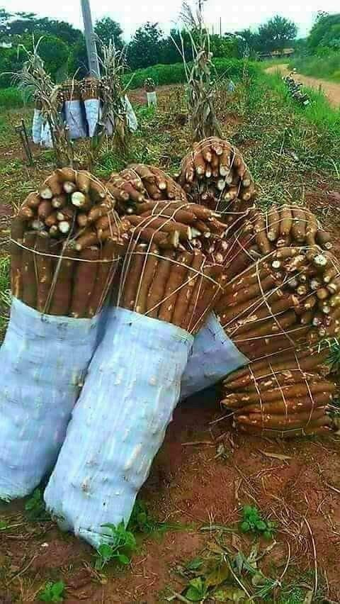
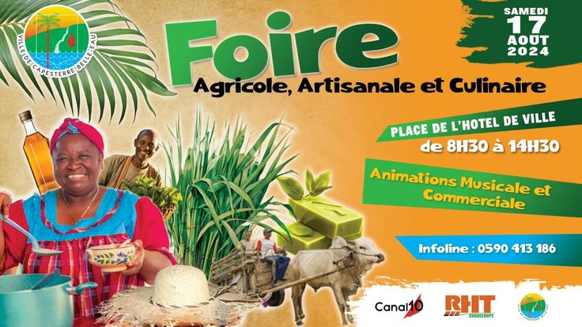

Récolte de maniocs
Une récolte exceptionnelle cette saison dans la région Maritime.
Lire plusValoriser les produits agricoles locaux et accompagner les producteurs vers une agriculture plus performante.
Notre raison d’être est de garantir les approvisionnements en termes de coûts, qualité, délais et volumes aux entreprises de la chaîne de valeur du secteur de l’agro-industrie tout en contribuant à l'enrichissement des producteurs locaux.
Nous aspirons à devenir un conglomérat agro-industriel à rayonnement international, vitrine du savoir-faire du Togo. Notre développement, guidé par l'intégration verticale et horizontale, vise à renforcer notre offre de services pour mieux répondre à vos besoins.
+ Membres
Régions couvertes
Produits

Une récolte exceptionnelle cette saison dans la région Maritime.
Lire plus
Une formation sur les bonnes pratiques agricoles a réuni plusieurs producteurs.
Lire plus
AGRI-TOGO était présent lors de la foire agricole nationale.
Lire plus